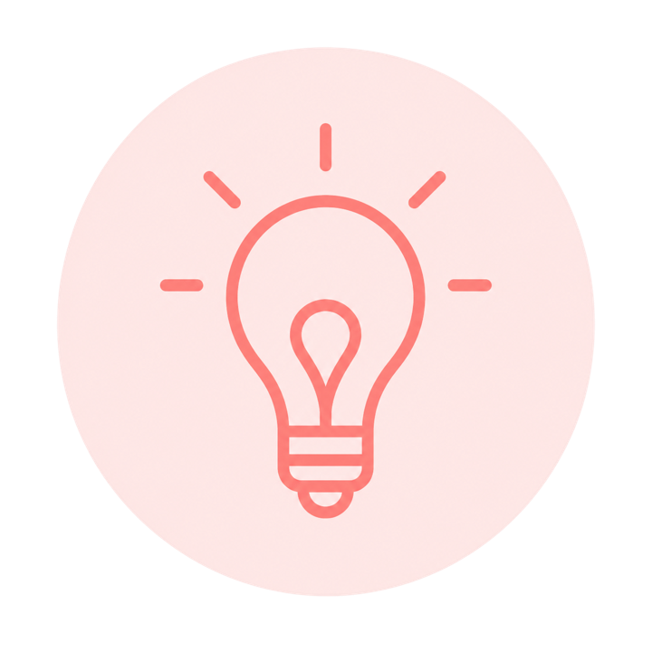
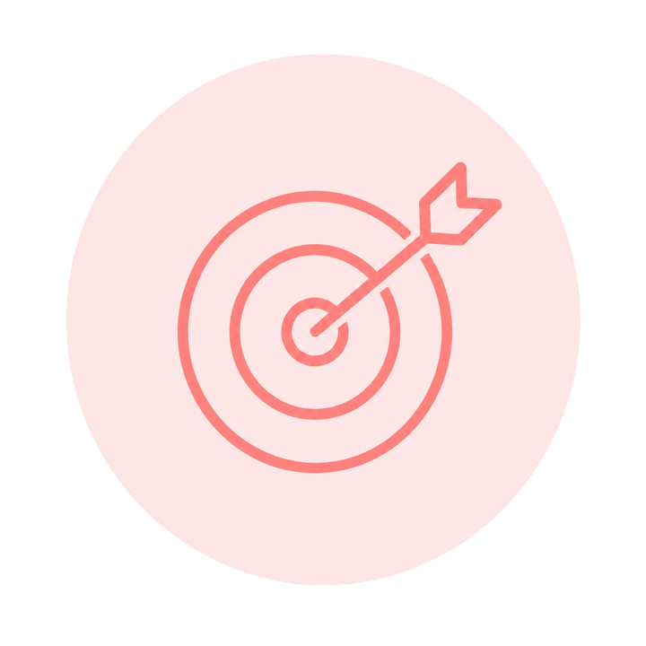
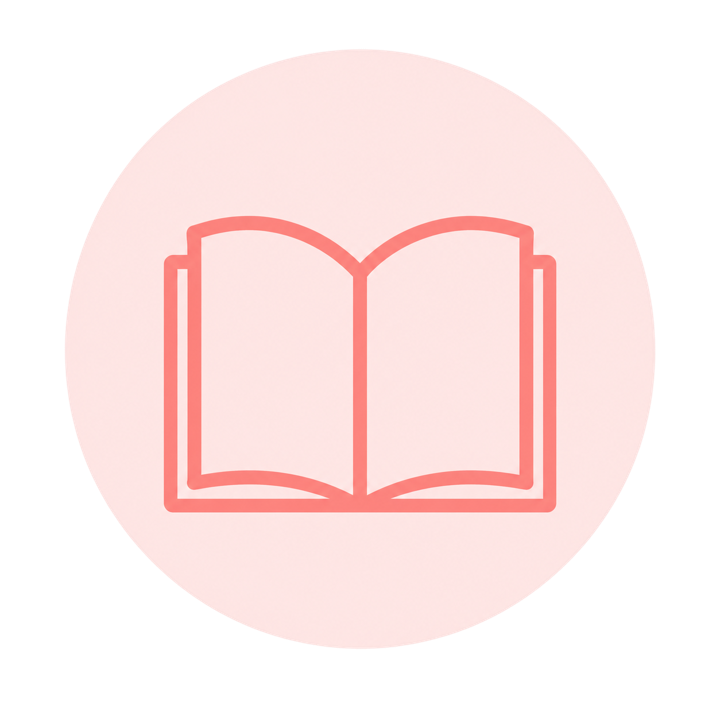

אינטגרציה והתנסות מעשית
חיבור בין תיאוריות חינוכיות נלמדות לאסטרטגיות הוראה ומושגים מעשיים, מתן כלים ויישומם בעבודה היומיומית.
תכנים אלו יתמקדו ברכיבי תפקיד מחנכת כיתה, במטרה לשלב בין ידע תיאורטי, פרקטיקות מקצועיות ויישום מעשי בשטח.
תנועה וחיבור בין תאוריה, פרקטיקה ומעשה בתפקיד חינוך כיתה
חיבור בין תיאוריות חינוכיות נלמדות לאסטרטגיות הוראה ומושגים מעשיים, מתן כלים ויישומם בעבודה היומיומית.
חקר וניתוח שיטתי של פרקטיקות הוראה והתנסויות אישיות כדי לאפשר בחינה, בחירה והתאמה אישית למחנכת.
דיון ומשוב המתייחס ליעילות של גישות ואסטרטגיות שונות תוך חילוץ תובנות יישומיות להמשך.

דפדפו בין התכנים המוצעים והרעיונות ליישום.

היכרות עם תיאוריות, עקרונות ופרקטיקות לניהול כיתה אפקטיבי, ליצירת סביבה לימודית תומכת ומחויבת, ולביסוס אקלים כיתתי המאפשר למידה, שייכות והשתתפות.


איתור מוקדי פערים וחוסר שוויון בכיתה והתאמת מענים לצמצום פערים אלה. התוכן עוסק בשוויון הזדמנויות פדגוגי בין התלמידים, בהובלת הכיתה ובפדגוגיה רגישת תרבות, כדי לקדם הוראה מותאמת, מכילה ומכלילה.
היכרות עם כלי מיפוי שונים להערכת התקדמות התלמידים, זיהוי צרכים ומתן משוב מקדם למידה. התוכן מאפשר למחנכת לבסס תמונת מצב כיתתית ואישית, לדייק מטרות למידה ולבנות מענים מותאמים לצורכי התלמידים והכיתה.
היכרות עם פרקטיקות הוראה ושילוב תיאוריות חינוכיות בתכנון תוכנית לימודים. התוכן מתמקד בבניית מערכי שיעור המשלבים מודלים פדגוגיים, אסטרטגיות הוראה שונות וטכניקות הוראה מגוונות ומותאמות לצורכי התלמידים.
המחנכת כמנהיגה של שותפות ביחסי הורה-מורה-ילד, מתוך הכרה בחשיבות יצירת קשר מיטיב, פתוח ואמפתי, היכול לתרום לשייכות, הצלחה ותמיכה הדדית לצורך קידום הצלחת התלמידים והתלמידות. התוכן כולל גם התמודדות עם סגנונות שונים של הורים וקיום שיח מתמשך על אתגרים.
הבנת הצרכים האישיים של התלמיד ומתן מענה במגוון ההיבטים לימודיים, חברתיים, רגשיים, התנהגותיים ופיזיים תוך ראייה רחבה של ההתפתחות “השלמה” של התלמיד.
היכרות עם שותפי התפקיד ומתן כלים ליצירת סביבה חינוכית תומכת, מפרה ומכילה עבור המחנכת והתלמידים בעזרת שילוב ותכלול כלל הגורמים המעורבים בכיתה ובבית הספר.
אסטרטגיות וטכניקות לניהול זמן ומשימות והצבת גבולות למניעת שחיקה רגשית ומנטלית.
היכרות עם מפת המימדים להערכת מתמחים ומורים חדשים, כבסיס להתבוננות עצמית על תהליכי ההתפתחות המקצועית ולחיבור בין תהליכי הערכה לבין פרקטיקות לחינוך כיתה.
כרטיס 1 מתוך 9: ניהול ותכלול כיתה